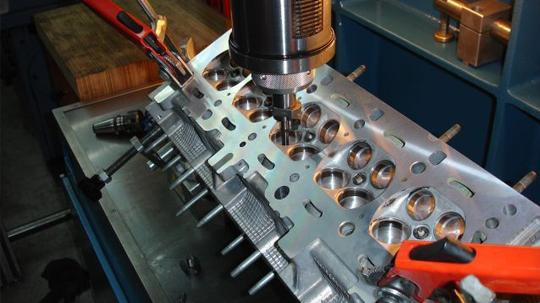
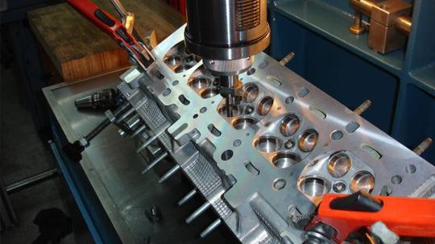

Начало
За сервиза
Авто услуги
Цилиндрови глави
Авточасти
Галерия
Контакти
тел:0876349255
Начало
За сервиза
Авто услуги
Цилиндрови глави
Авточасти
Галерия
Контакти
тел:0876349255
 

Ремонт на цилиндрови глави
Автосервиза разполага с отдел който се занимава с цялостно облужване на цилинтрови глави на леки, товарни, тешкотоварни, земеделски и други техники.
Ето и някои от най-масовите ремонти, които извършваме по цилинтровите глави:
- Пpоверка за херметичност на охладилетната система чрез водна преса.
- Възстановяване на работните повърхности на клапанното легло и шлайфане на работните повърхности на клапана.
- Смяна на водач на клапан и окончателна прецизна обработка.
- Смяна на клапанно легло, демонтаж, обработка, монтаж.
- Повърхностна обработка на цилиндровата глава чрез шлаифане.
- Възстановяване целоста на главата, чрез аргонови заварки.
- Регулиране на клапани.
- Изваждане на скъсани подгревни свещи.
- Смяна водни тапи на цилинтровата глава.
- Демонтаж на вякъкъв вид дизелови дюзи.
- Правене на резби и втулки.
- Повърхностна обработка на блок чрез шлаифане.